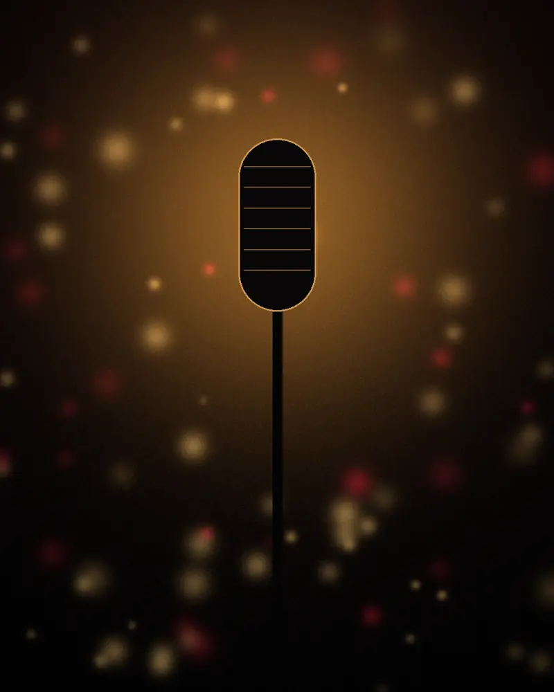

Yo Me Llamo Marc Anthony: La salsa se vive en vivo
Salsa, balada y mucho sabor en un show con la voz, la elegancia y la energía inspiradas en Marc Anthony. Para ferias, discotecas, bodas y eventos corporativos.
Elegancia, sabor y una voz que se siente
Un homenaje a la música de Marc Anthony con entrega, traje oscuro y la potencia vocal que el público espera.
Desde los clásicos de salsa que hicieron bailar a varias generaciones hasta las baladas que se cantan a todo pulmón. Cada presentación es un concierto, con dirección musical, arreglos fieles y una conexión real con la gente. Siempre con orquesta completa de doce músicos, en un salón de gala o en una plaza pública.
Los éxitos que todos cantan
Un recorrido por la salsa y la balada que convirtieron a Marc Anthony en leyenda, interpretado en vivo.
- Vivir mi vida
- Valió la pena
- Ahora quién
- Tu amor me hace bien
- Y hubo alguien
- Contra la corriente
- Flor pálida
- Qué precio tiene el cielo
- Hasta ayer
- Te conozco bien
- Hasta que te conocí
- Dímelo
Repertorio a la medida de cada evento. Canciones de sus respectivos compositores, interpretadas en homenaje.
Gran gala con orquesta
Un solo formato, sin atajos: el artista y doce músicos en vivo sobre la tarima.
Artista + 12 músicos
- Orquesta completa de 12 músicos en vivo
- Sección de metales: trompetas y trombones
- Percusión: timbal, congas y bongó
- Piano, bajo y coros
- Dirección musical y arreglos de orquesta
- Repertorio de salsa y balada a la medida
Siente la energía
Un adelanto de lo que vive el público en cada presentación.
El estilo del original
Videos oficiales de Marc Anthony en YouTube: la elegancia, la orquesta y la energía que inspiran este homenaje.


Contenido oficial de Marc Anthony y su sello, incluido solo como referencia. Este sitio es de un show tributo independiente y no está afiliado al artista.
Noches de fiesta
Desliza para ver más.

Próximos eventos
- Ver detalles
Noche de Salsa BravaEntrada libre
Rionegro · Plaza principal · Sáb 21:00 h
- Comprar boletas
Gala de Salsa y BaladaBoletería
Medellín · Salón de eventos (por confirmar) · Sáb 22:00 h
- Ver detalles
Fiestas de fin de añoEntrada libre
Envigado · Parque principal · Sáb 20:00 h
Antes de contratar
¿Cuánto cuesta contratar el show de Yo Me Llamo Marc Anthony?
El valor depende de la ciudad, la fecha, la duración y la producción técnica del evento. El show siempre se presenta con orquesta completa de 12 músicos. Escríbenos con los datos de tu evento y te enviamos una cotización en menos de 24 horas.
¿Es Marc Anthony en persona?
No. Es un show tributo profesional que rinde homenaje a la música de Marc Anthony con voz, vestuario y puesta en escena inspirados en su estilo. No está afiliado ni representa al artista original.
¿Viajan a otros municipios y ciudades?
Sí. Tenemos base en Antioquia y llevamos el show a cualquier municipio de Colombia y al exterior. Los viáticos se cotizan según el destino.
¿Qué tipo de eventos cubren?
Fiestas patronales y ferias municipales, discotecas y bares de salsa, matrimonios, quince años, eventos corporativos, cruceros, hoteles y conciertos.
¿Qué necesita el evento a nivel técnico?
El show tiene un rider técnico y de hospitalidad para la orquesta. Puedes consultarlo y descargarlo en la sección Rider. Si tu evento no cuenta con sonido, también podemos cotizar la producción completa.
¿Con cuánta anticipación debo reservar?
Recomendamos reservar con al menos 30 días de anticipación, y con más tiempo para diciembre, enero y temporada de ferias. La fecha se bloquea con la firma del contrato y el anticipo.